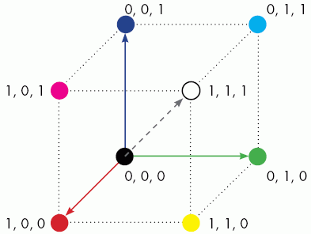

(Deprecated) use vcStatement
vcRslStatement is the basic implementation for statements in a robot program.
Most statements can be manipulated directly as vcRslStatement type objects, while others have their own implementations that inherit vcRslStatement.
The following properties are common in all RSL statements.
| Name | Type | Access | Description |
| GridColor | vcVector | RW | Defines the color associated with the statement, for example
when robot program is listed in a panel.
Color is defined in RGB color space by using a vector containing normalized XYZ values.  |
| Index | Integer | RW | Defines the location (index) of statement in routine. |
| Name | String | RW | Defines the name of statement. |
| Properties | List of vcProperty | R | Gets a list of all properties in statement. |
| Routine | vcRslRoutine | R | Gets the routine the statement belongs to in robot program. |
| Type | Enumeration | R | Gets the statement type.
See Motion Constants for more information. |
A statement that calls a subroutine in robot program.
| Name | Type | Access | Description |
| RoutineName | String | RW | Defines the subroutine to call by name. |
A statement that prints a comment to Output panel.
| Name | Type | Access | Description |
| Comment | String | RW | Defines the message to be printed to user. |
A statement that temporarily modifies a base frame during a simulation.
| Name | Type | Access | Description |
| Base | String
or |
RW | Gets/Sets the base frame used by statement.
To set, give the name of a base frame listed in robot controller, vcRobotController, which is referenced by robot executor of this statement. |
| Node | String | RW | Defines the parent node of Base. |
| Position | vcMatrix | RW | Defines the location of Base.
If Relative is set to True, this property references Base coordinate system, thereby changing base frame relative to its current position. |
| Relative | Boolean | RW | Defines if Position provides absolute or relative values for Base location. |
A statement that temporarily modifies a tool frame during a simulation.
| Name | Type | Access | Description |
| Node | String | RW | Defines the parent node of Tool. |
| Position | vcMatrix | RW | Defines the location of Tool.
If Relative is set to True, this property references Tool coordinate system, thereby changing tool frame relative to its current position. |
| Relative | Boolean | RW | Defines if Position provides absolute or relative values for Tool location. |
| Tool | String
or |
RW | Gets/Sets the tool frame used by statement.
To set, give the name of a tool frame listed in robot controller, vcRobotController, which is referenced by robot executor of this statement. |
A statement that executes a timed delay.
| Name | Type | Access | Description |
| Delay | Real | RW | Defines the amount of time (in seconds) to delay program execution. |
A deprecated statement for executing a robot grasp action. No additional properties.
A statement for halting and/or resetting a simulation.
| Name | Type | Access | Description |
| Reset | Boolean | RW | Defines if a simulation is reset. |
A statement that can synchronize two or more robots.
| Name | Type | Access | Description |
| SyncComponents | List of vcComponent | RW | List of components in the sync program. |
| SyncMsg | String | RW | Defines the sync message to trigger synchronization. |
| WaitSync | Boolean | RW | Defines if a robot in sync program waits for all SyncComponents
to send SyncMsg.
If False, robot sends SyncMsg and continues the execution of its program. |
A deprecated statement for executing a robot release action. No additional properties.
A statement that remotely calls a routine in another robot's program.
| Name | Type | Access | Description |
| RemoteRoutine | String | RW | Defines the name of routine to remotely call in a robot.
The format is [component_name]::[routine_name] and the target robot should be connected to calling robot via an abstract interface. |
A statement that waits for a routine to be completed by another robot.
| Name | Type | Access | Description |
| RemoteRoutine | String | RW | Defines the name of routine to wait for in a robot.
The format is [component_name]::[routine_name] and the target robot should be connected to calling robot via an abstract interface. |
A statement that sets the value of a signal mapped to an output port of robot.
| Name | Type | Access | Description |
| Output | Integer | RW | Defines the output port. |
| Value | Boolean | RW | Defines the output value. |
A statement that waits for an input port of robot mapped to a signal to have a specific value.
| Name | Type | Access | Description |
| Input | Integer | RW | Defines the input port. |
| Value | Boolean | RW | Defines the input value. |
| WaitTrigger | Boolean | RW | Defines if Value is evaluated continuously or when a signal event occurs during a simulation. |
| Name | Return Type | Parameters | Description |
| createProperty | vcProperty | String type, String name, [Enumeration constraints] | Adds a new property of a given type
and name to statement.
An optional constraints argument can be given to define constraints for property, which must be given at the time of creation. See Property Constants for more information. |
| deleteProperty | None | vcProperty property | Removes a given property from statement. |
| getProperty | vcProperty | String name | Returns the first matching property of a given name in the statement; otherwise returns None. |
Example. Manipulate statements in robot routine
| from vcScript import *
#Access main program via Executor comp = getComponent() rx = comp.findBehaviour('Executor') mainroutine = rx.MainRoutine #Access statements and return type and order def exampleRsl(): for i in mainroutine.Statements: print i.Name, i.Type, i.Index #Create and delete statement via events def OnRun(): my_statement = mainroutine.createStatement(VC_STATEMENT_COMMENT) my_statement.Comment = "Example Comment" exampleRsl() def OnReset(): mainroutine.deleteStatement(len(foo.Statements)-1) #deletes the last statement when user hits reset button exampleRsl() |